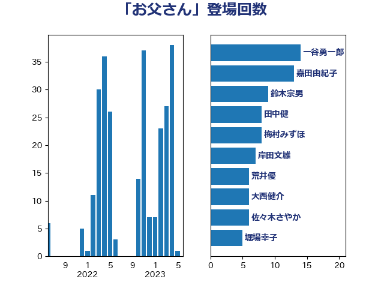

単語「お父さん」

| 一谷勇一郎 | 日本維新の会 | 14 回 |
| 嘉田由紀子 | 無所属 | 13 回 |
| 鈴木宗男 | 日本維新の会 | 9 回 |
| 田中健 | 国民民主党 | 8 回 |
| 梅村みずほ | 日本維新の会 | 8 回 |
| 岸田文雄 | 自由民主党 | 7 回 |
| 荒井優 | 立憲民主党 | 6 回 |
| 大西健介 | 立憲民主党 | 6 回 |
| 佐々木さやか | 公明党 | 6 回 |
| 堀場幸子 | 日本維新の会 | 5 回 |
| 青島健太 | 日本維新の会 | 4 回 |
| 阿部弘樹 | 日本維新の会 | 4 回 |
| 長友慎治 | 国民民主党 | 4 回 |
| 鈴木敦 | 国民民主党 | 4 回 |
| 金村龍那 | 日本維新の会 | 4 回 |
| 本村伸子 | 日本共産党 | 4 回 |
| 宮本岳志 | 日本共産党 | 4 回 |
| 勝部賢志 | 立憲民主党 | 4 回 |
| 伊藤孝恵 | 国民民主党 | 4 回 |
| 西銘恒三郎 | 自由民主党 | 3 回 |
| 玉木雄一郎 | 国民民主党 | 3 回 |
| 浅野哲 | 国民民主党 | 3 回 |
| 山本香苗 | 公明党 | 3 回 |
| 大串博志 | 立憲民主党 | 3 回 |
| 吉田はるみ | 立憲民主党 | 3 回 |
| 前川清成 | 日本維新の会 | 3 回 |
| 仁木博文 | 無所属 | 3 回 |
| 鈴木義弘 | 国民民主党 | 2 回 |
| 逢坂誠二 | 立憲民主党 | 2 回 |
| 落合貴之 | 立憲民主党 | 2 回 |
| 篠原孝 | 立憲民主党 | 2 回 |
| 稲富修二 | 立憲民主党 | 2 回 |
| 石川大我 | 立憲民主党 | 2 回 |
| 田中英之 | 自由民主党 | 2 回 |
| 河野太郎 | 自由民主党 | 2 回 |
| 池畑浩太朗 | 日本維新の会 | 2 回 |
| 松原仁 | 立憲民主党 | 2 回 |
| 杉田水脈 | 自由民主党 | 2 回 |
| 川田龍平 | 立憲民主党 | 2 回 |
| 岬麻紀 | 日本維新の会 | 2 回 |
| 山下貴司 | 自由民主党 | 2 回 |
| 和田有一朗 | 日本維新の会 | 2 回 |
| 上田清司 | 国民民主党 | 2 回 |
| 高良鉄美 | 無所属 | 1 回 |
| 阿部知子 | 立憲民主党 | 1 回 |
| 長妻昭 | 立憲民主党 | 1 回 |
| 鎌田さゆり | 立憲民主党 | 1 回 |
| 野間健 | 立憲民主党 | 1 回 |
| 野田聖子 | 自由民主党 | 1 回 |
| 野村哲郎 | 自由民主党 | 1 回 |
| 赤木正幸 | 日本維新の会 | 1 回 |
| 赤嶺政賢 | 日本共産党 | 1 回 |
| 谷田川元 | 立憲民主党 | 1 回 |
| 西村智奈美 | 立憲民主党 | 1 回 |
| 藤田文武 | 日本維新の会 | 1 回 |
| 葉梨康弘 | 自由民主党 | 1 回 |
| 萩生田光一 | 自由民主党 | 1 回 |
| 若林健太 | 自由民主党 | 1 回 |
| 自見はなこ | 自由民主党 | 1 回 |
| 細田健一 | 自由民主党 | 1 回 |
| 穂坂泰 | 自由民主党 | 1 回 |
| 田嶋要 | 立憲民主党 | 1 回 |
| 漆間譲司 | 日本維新の会 | 1 回 |
| 湯原俊二 | 立憲民主党 | 1 回 |
| 池下卓 | 日本維新の会 | 1 回 |
| 永岡桂子 | 自由民主党 | 1 回 |
| 比嘉奈津美 | 自由民主党 | 1 回 |
| 森田俊和 | 立憲民主党 | 1 回 |
| 松野明美 | 日本維新の会 | 1 回 |
| 松川るい | 自由民主党 | 1 回 |
| 本庄知史 | 立憲民主党 | 1 回 |
| 早稲田ゆき | 立憲民主党 | 1 回 |
| 日下正喜 | 公明党 | 1 回 |
| 打越さく良 | 立憲民主党 | 1 回 |
| 徳永エリ | 立憲民主党 | 1 回 |
| 後藤祐一 | 立憲民主党 | 1 回 |
| 平沼正二郎 | 自由民主党 | 1 回 |
| 島村大 | 自由民主党 | 1 回 |
| 山田太郎 | 自由民主党 | 1 回 |
| 山崎正恭 | 公明党 | 1 回 |
| 山井和則 | 立憲民主党 | 1 回 |
| 小西洋之 | 立憲民主党 | 1 回 |
| 小川淳也 | 立憲民主党 | 1 回 |
| 寺田学 | 立憲民主党 | 1 回 |
| 宮本徹 | 日本共産党 | 1 回 |
| 奥下剛光 | 日本維新の会 | 1 回 |
| 太田房江 | 自由民主党 | 1 回 |
| 大島敦 | 立憲民主党 | 1 回 |
| 大島九州男 | れいわ新選組 | 1 回 |
| 塩村あやか | 立憲民主党 | 1 回 |
| 坂本祐之輔 | 立憲民主党 | 1 回 |
| 國重徹 | 公明党 | 1 回 |
| 吉良州司 | 無所属 | 1 回 |
| 倉林明子 | 日本共産党 | 1 回 |
| 伴野豊 | 立憲民主党 | 1 回 |
| 下野六太 | 公明党 | 1 回 |
| 三谷英弘 | 自由民主党 | 1 回 |
| 三浦信祐 | 公明党 | 1 回 |
| 三木圭恵 | 日本維新の会 | 1 回 |